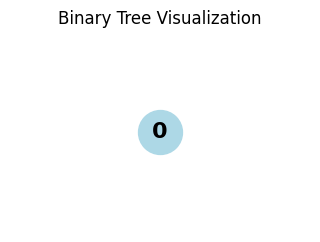
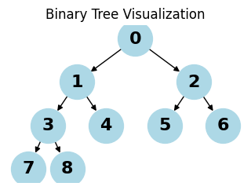
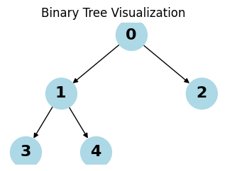
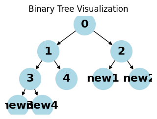
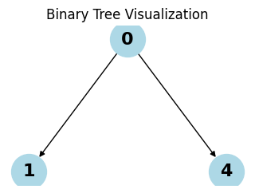
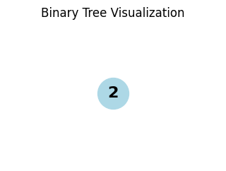

from collections import deque
import matplotlib.pyplot as plt
import networkx as nxBinary Trees
Create and operate on Binary Trees
Utility functions
def visualize_tree(root):
if not root:
print("Empty tree")
return
G = nx.DiGraph()
pos = {}
labels = {}
node_id = 0
def add_nodes(node, x=0.0, y=0.0, layer=1):
nonlocal node_id
if node:
current_id = node_id
node_id += 1
G.add_node(current_id)
pos[current_id] = (x, y)
labels[current_id] = str(node.value)
if node.left:
left_id = node_id
G.add_edge(current_id, left_id)
add_nodes(node.left, x - 1/layer, y - 1, layer + 1)
if node.right:
right_id = node_id
G.add_edge(current_id, right_id)
add_nodes(node.right, x + 1/layer, y - 1, layer + 1)
return current_id
add_nodes(root)
plt.figure(figsize=(3, 2))
nx.draw(G, pos, labels=labels, with_labels=True, node_color='lightblue',
node_size=1000, font_size=16, font_weight='bold', arrows=True)
plt.title("Binary Tree Visualization")
plt.show()Binary Trees
Classes and methods for operating with Binary Search Trees.
A Binary Search Tree is a hierarchical data structure compose of nodes, where each node has at most two child nodes. Binary Trees are used for efficient data storage and support insertions, deletions, and traversals. These operations have a worst-case complexity of O(n). Balanced trees have a time complexity of O(logn).

Each node in a binary tree has three parts: - Data - Pointer to the left child - Pointer to the right child

Creating a Node
class Node:
"""A node in a binary tree."""
def __init__(self, key, left: "Node|None"=None, right: "Node|None"=None):
self.value = key
self.left: Node|None = left
self.right: Node|None = right
def __str__(self) -> str:
"""A string representation of the node including its value, left, and right children."""
left_value = f"Node({self.left.value})" if self.left else None
right_value = f"Node({self.right.value})" if self.right else None
return f"Node({self.value}, left={left_value}, right={right_value})"
def __repr__(self) -> str:
"""A representation of the node including its value, left, and right children."""
return self.__str__()Creating a binary tree requires creating a set of nodes.
node1 = Node(1)
node1Node(1, left=None, right=None)root_node = (
Node(1,
Node(2,
Node(4,
Node(8),
Node(9)
),
Node(5,
Node(10),
Node(11)
)
),
Node(3,
Node(6,
Node(12),
Node(13)
),
Node(7,
Node(14),
Node(15)
)
)
)
)
root_nodeNode(1, left=Node(2), right=Node(3))Terminology:
- Node: an object with a value, a left node, and a child node.
- Child: a left or right node.
- Parent: a node that has a child node.
- Root: the topmost node in a set of nodes; it does not have a parent.
- Leaf: a node with a parent node and no child nodes.
- Internal: a node with at least one child node.
- Depth: the number of edges from a node to its root.
- Height: the Depth of the deepest leaf node.
class Node:
"""A node in a binary tree."""
def __init__(self, key, left: "Node|None"=None, right: "Node|None"=None, parent: "Node|None" = None):
self.value = key
self.parent: Node|None = parent
self.left: Node|None = left
self.right: Node|None = right
def __str__(self) -> str:
"""A string representation of the node including its value, left, and right children."""
left_value = f"Node({self.left.value})" if self.left else None
right_value = f"Node({self.right.value})" if self.right else None
parent_value = f"Node({self.parent.value})" if self.parent else None
return f"Node({self.value}, left={left_value}, right={right_value}, parent={parent_value})"
def __repr__(self) -> str:
"""A representation of the node including its value, left, and right children."""
return self.__str__()
@property
def height(self) -> int:
return 1 + max(
(self.left.height if self.left else 0), (self.right.height if self.right else 0)
)
@property
def depth(self) -> int:
return 1 + (self.parent.depth if self.parent else 0)def set_parents(node: Node, parent: Node|None=None) -> Node:
"""Set parent nodes given a root node."""
if parent:
node.parent = parent
if node.left:
set_parents(node.left, node)
if node.right:
set_parents(node.right, node)
return noderoot_node = set_parents(
Node(1,
Node(2,
Node(4,
Node(8),
Node(9)
),
Node(5,
Node(10),
Node(11)
)
),
Node(3,
Node(6,
Node(12),
Node(13)
),
Node(7,
Node(14),
Node(15)
)
)
)
)
root_node.parent, root_node.height, root_node.depth(None, 4, 1)if root_node.left:
print(root_node.left, "depth:", root_node.left.depth)Node(2, left=Node(4), right=Node(5), parent=Node(1)) depth: 2Properties of a binary tree:
- Max nodes: \(2^H - 1\)
- Max nodes in a level: \(2^L\)
- Min height is \(log_2(n+1)\)
Operations on a binary tree
- Traversal:
- Visiting all nodes in a binary tree.
- Depth-First Search:
- preorder
- inorder
- postorder
- Breadth-First Search:
- level
- Insertion
- Deletion
Traversal
from collections import deque
def _create_dummy_node(num=5) -> Node:
if num <= 0:
return None
nodes = [Node(i) for i in range(num)]
for i in range(num):
left_index = 2 * i + 1
right_index = 2 * i + 2
if left_index < num:
nodes[i].left = nodes[left_index]
nodes[left_index].parent = nodes[i]
if right_index < num:
nodes[i].right = nodes[right_index]
nodes[right_index].parent = nodes[i]
return nodes[0] # root node
visualize_tree(_create_dummy_node(0))
visualize_tree(_create_dummy_node(1))
visualize_tree(_create_dummy_node(5))
visualize_tree(_create_dummy_node(9))Empty tree


DFS
Implemented using recursion
root = _create_dummy_node()from typing import Generator
def dfs_inorder(node: Node) -> Generator[Node, None, None]:
"""Depth-first search.
Visits left subtree, then node, then right subtree
"""
if node.left:
yield from dfs_inorder(node.left)
yield node
if node.right:
yield from dfs_inorder(node.right)
list(dfs_inorder(root))[Node(3, left=None, right=None, parent=Node(1)),
Node(1, left=Node(3), right=Node(4), parent=Node(0)),
Node(4, left=None, right=None, parent=Node(1)),
Node(0, left=Node(1), right=Node(2), parent=None),
Node(2, left=None, right=None, parent=Node(0))]def dfs_preorder(node: Node) -> Generator[Node, None, None]:
"""Depth-first search.
Visits the node, then left subtree, then right subtree.
"""
yield node
if node.left:
yield from dfs_preorder(node.left)
if node.right:
yield from dfs_preorder(node.right)
list(dfs_preorder(root))[Node(0, left=Node(1), right=Node(2), parent=None),
Node(1, left=Node(3), right=Node(4), parent=Node(0)),
Node(3, left=None, right=None, parent=Node(1)),
Node(4, left=None, right=None, parent=Node(1)),
Node(2, left=None, right=None, parent=Node(0))]def dfs_postorder(node: Node) -> Generator[Node, None, None]:
"""Depth-first search.
Visits the left subtree, then right subtree, then the node
"""
if node.left:
yield from dfs_postorder(node.left)
if node.right:
yield from dfs_postorder(node.right)
yield node
list(dfs_postorder(root))[Node(3, left=None, right=None, parent=Node(1)),
Node(4, left=None, right=None, parent=Node(1)),
Node(1, left=Node(3), right=Node(4), parent=Node(0)),
Node(2, left=None, right=None, parent=Node(0)),
Node(0, left=Node(1), right=Node(2), parent=None)]BFS
Implemented using a queue
from collections import deque
def bfs(node: Node) -> Generator[Node, None, None]:
"""Breadth-first search."""
queue = deque([node])
while queue:
node = queue.popleft()
yield node
if node.left:
queue.append(node.left)
if node.right:
queue.append(node.right)
list(bfs(root))[Node(0, left=Node(1), right=Node(2), parent=None),
Node(1, left=Node(3), right=Node(4), parent=Node(0)),
Node(2, left=None, right=None, parent=Node(0)),
Node(3, left=None, right=None, parent=Node(1)),
Node(4, left=None, right=None, parent=Node(1))]Insertion
Insertion uses BFS to find the first child node without a child.
def insert_node(root: Node, key):
""""""
queue = deque([root])
while queue:
node = queue.popleft()
if node.left:
queue.append(node.left)
else:
node.left = Node(key=key, left=None, right=None, parent=node)
break
if node.right:
queue.append(node.right)
else:
node.right = Node(key=key, left=None, right=None, parent=node)
break
root = _create_dummy_node()
visualize_tree(root)
insert_node(root, "new1")
insert_node(root, "new2")
insert_node(root, "new3")
insert_node(root, "new4")
visualize_tree(root)

Search
from typing import Callable
def search_tree(root: Node, key, traversal_func: Callable[[Node], Generator[Node, None, None]]) -> Node|None:
for node in traversal_func(root):
if node.value == key:
return node
else:
return None
root = _create_dummy_node()
(
search_tree(root, 1, dfs_inorder),
search_tree(root, 2, dfs_preorder),
search_tree(root, 3, dfs_postorder),
search_tree(root, 4, bfs),
search_tree(root, 5, dfs_inorder),
)(Node(1, left=Node(3), right=Node(4), parent=Node(0)),
Node(2, left=None, right=None, parent=Node(0)),
Node(3, left=None, right=None, parent=Node(1)),
Node(4, left=None, right=None, parent=Node(1)),
None)Deletion
Deleting a node requires choosing a traversal method, finding the node to delete, then promoting another node to the level of the parent node to preserve the tree’s structure. The simplest solution is to replace the deleted node with the right-most node in the tree. If the node to delete is the right-most node, just delete it.
The first step is to identify the right-most node, then compare it with the node to delete, then delete the node and swap it with the right-most node.
Note: any node can be swapped to preserve the tree structure, but if you want to maintain order of a BST, you need to choose the node that will preserve BST constraints.
def delete_node(root: Node, key=None) -> Node|None:
"""Uses BFS to delete the node with a key and swap it with the right-most node."""
# if root has no children
if root.left or root.right:
pass
else:
del root
return None
# find the deepest root node and its parent
queue: deque[tuple[Node, Node|None]] = deque([(root, None)]) # root has no parent
last_parent = None
last_node = None
while queue:
last_node, last_parent = queue.popleft()
if last_node.left:
queue.append((last_node.left, last_node))
if last_node.right:
queue.append((last_node.right, last_node))
# delete the leaf node
if last_parent:
if last_parent.right:
last_parent.right = None
elif last_parent.left:
last_parent.left = None
else:
raise NotImplementedError("Parent of right-most node not found.")
# find the node with value == key
if last_node and root.value == key:
last_node.left = root.left
last_node.right = root.right
del root
return last_node
elif last_node:
pass
else:
raise NotImplementedError
target_queue: deque[Node] = deque([root])
while target_queue:
node = target_queue.popleft()
if node.left:
if node.left is last_node:
node.left = None
return root
elif node.left.value == key:
node.left = last_node
last_node.parent = node
return root
target_queue.append(node.left)
if node.right:
if node.right is last_node:
node.right = None
return root
elif node.right.value == key:
node.right = last_node
last_node.parent = node
return root
target_queue.append(node.right)
return root
visualize_tree(_create_dummy_node())
visualize_tree(
delete_node(
delete_node(
_create_dummy_node(),
2
), # type: ignore
5
)
)
visualize_tree(
delete_node(Node(1), 1)
)
visualize_tree(
delete_node(Node(1, left=Node(2)), 1)
)

Empty tree
Types of binary trees
- By children
- Full
- Degenerate
- Skewed
- By levels
- Complete
- Perfect
- Balanced
- By values
- Binary search tree
- AVL
- Red Black
- B
- B+
- Segment